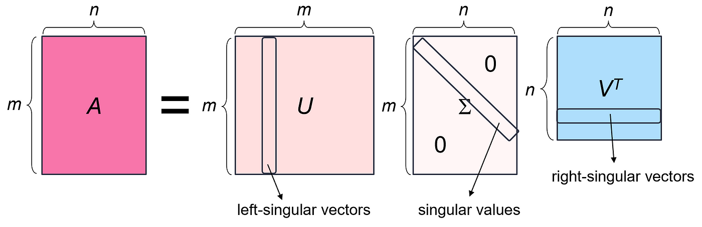

Recommender Systems with Deep Learning - Matrix Factorization
Overview
Our vignette is on recommender systems that utilize deep learning techniques. Recommendation systems are a tool that allow us to analyze interactions between users and items, leveraging historical data to predict future interactions. There are two types of recommendation systems, content-based and collaborative filtering, which is what we are using. In collaborative filtering, the system predicts user preferences based on the behavior of other users, assuming that users with similar past preferences will have similar future preferences. Furthermore, advanced recommendation systems can incorporate machine learning and deep learning techniques to improve accuracy, allowing the system to capture complex linear relationships in the data.
Data Description
This dataset is sourced from Kaggle after searching for data that matched the structure of examples referenced in the Dive Into Deep Learning textbook. The dataset contains user ratings for products, making it a strong candidate for testing recommendation systems, particularly collaborative filtering models.
The dataset is part of the Amazon Reviews Data repository, which was curated by Julian McAuley. It contains product reviews and ratings across multiple categories. For our project, we specifically utilized the Electronics dataset. The original data source can be found here.
Note: In our data folder we will only include 5000 rows of data for reference because the entire data file is too large to be uploaded on github. Note: In our data folder we will only include 5000 rows of data for reference because the entire data file is too large to be uploaded on github.
Attribute information:
userId: Every user identified with a unique id (First Column)
productId: Every product identified with a unique id (Second Column)
Rating: Rating of the corresponding product by the corresponding user (Third Column)
timestamp: Time of the rating (Fourth Column)
Exploratory Data Analysis

This bar chart illustrates the distribution of numerical ratings across various rating scores. The x-axis represents the ratings, ranging from 0.5 to 5.0 in 0.5 increments, while the y-axis shows the number of ratings, scaled in millions. The highest count of ratings is associated with a rating of 5.0, exceeding 4 million ratings. Other ratings, such as 1.0, 3.0, and 4.0, have significantly fewer ratings in comparison.

This histogram represents how frequently users provide a specific number of ratings. The x-axis denotes the number of ratings given by users, ranging from 0 to 50, and the y-axis shows the count of users, scaled in millions. A vast majority of users provide very few ratings, with the highest concentration around 1 to 2 ratings per user. The frequency of users rapidly decreases as the number of ratings per user increases.
Matrix Factorization

There are several methods to approach this, one being simply applying Singular Value Decomposition (SVD) and obtaining the user and item matrix directly. This is going to be our benchmark. A more advanced approach is to implement deep learning algorithms to train for the weights (parameters) in the user and item matrix, respectively. To make the product of these two matrices (
Baseline Model (SVD)

Singular value decomposition (or SVD) is a method of matrix factorization that consists of rescaling and multiple rotations that eventually results in three components: U, a unitary matrix consisting of left singular vectors, ∑, a rectangular matrix consisting of eigenvectors on the diagonal, and V, a complex unitary matrix with right singular vectors. To implement SVD in Python we will use the functions drawn from the scikit-surprise package. We will first specify a reader() object which will help to parse our input data.
from surprise import SVD, Dataset, Reader, accuracy
from surprise.model_selection import train_test_split
reader = Reader(rating_scale=(1, 5))
data = Dataset.load_from_df(data[['user_id', 'item_id', 'rating']], reader)We then create our training and testing sets in addition to initializing our svd model. We then create our training and testing sets in addition to initializing our svd model.
trainset, testset = train_test_split(data, test_size=0.2)
svd = SVD()Next, we compute predictions and analyze the model’s accuracy using RMSE and MAE as our evaluation metrics. Next, we compute predictions and analyze the model’s accuracy using RMSE and MAE as our evaluation metrics.
predictions = svd.test(testset)
rmse = accuracy.rmse(predictions)
mae = accuracy.mae(predictions)RMSE: 1.2943 MAE: 1.0190
Thus we see that our baseline model, SVD, didn’t perform horribly in terms of RMSE and MAE. Thus we see that our baseline model, SVD, performed pretty well in terms of RMSE and MAE.
Deep Learning
Algorithm Framework
Our recommender system extends traditional matrix factorization by incorporating deep learning techniques. In this model, we utilize embedding layers to learn latent representations of users and items, which are equivalent to the factors derived from Singular Value Decomposition in matrix factorization. However, utilizing deep learning allows for a more dynamic optimization where the embeddings are refined through a stochastic gradient descent. This allows the model to adapt to new data, continuously improving predictions. The embeddings are also used in a way that allows the model to generalize the non-linear relationships in user-item interactions that a traditional SVD cannot account for. This is done by putting each item into an embedding layer, which creates a vector representation. The user and item embedded layers are then multiplied together and summed. The Illustration of the algorithm is shown below:

Implementation
Here we are defining a simple matrix factorization model for a reccomendation system. Within the MF class we are creating embedding layers for user items, which are the learned latent represntations that capture user preferences and item characteristics. The forward method computes the dot product of the user and item embeddings to predict the interaction score (rating).
# Construct nodel structure with bias term
class MF(nn.Module):
""" Matrix factorization model simple """
def __init__(self, num_users, num_items, emb_dim):
super().__init__()
self.user_emb = nn.Embedding(num_embeddings=num_users, embedding_dim=emb_dim)
self.item_emb = nn.Embedding(num_embeddings=num_items, embedding_dim=emb_dim)
def forward(self, user, item):
user_emb = self.user_emb(user)
item_emb = self.item_emb(item)
element_product = (user_emb*item_emb).sum(1)
return element_productWe are retrieving the number of unique users and items from the dataset. We then instantiate the MF model with an embedding dimension of 32, and moving the model to the GPU.
n_users = len(df.user_id.unique())
n_items = len(df.item_id.unique())
mdl = MF(n_users, n_items, emb_dim=32)
mdl.to(device)
print(mdl)First we set the learning rate, number of epochs, weight, and an AdamW optimizer for efficient gradient updates. During the training phase, we set the training mode and batches of user-interactions for each epoch. The indices of the user and item are then passed to the model, which in turn predicts the ratings. The MSE loss is caclulated between predictions and actual ratings, then converted to RMSE. Back propagation is then used to compute gradients with loss.backward(), and the model parameters are updated with opt.step(). The model is then evaluated on the validation dataset, calculating the RMSE.
# Train with defined parameters
LR = 0.002
NUM_EPOCHS = 10
wd = 0.01
opt = optim.AdamW(mdl.parameters(), lr=LR, weight_decay=wd)
loss_fn = nn.MSELoss()
epoch_train_losses, epoch_val_losses = [], []
for i in range(NUM_EPOCHS):
train_losses, val_losses = [], []
mdl.train()
for xb,yb in dl_train:
xUser = xb[0].to(device, dtype=torch.long)
xItem = xb[1].to(device, dtype=torch.long)
yRatings = yb.to(device, dtype=torch.float)
preds = mdl(xUser, xItem)
mse_loss = loss_fn(preds, yRatings)
rmse_loss = np.sqrt(mse_loss.item())
train_losses.append(rmse_loss)
opt.zero_grad()
mse_loss.backward()
opt.step()
mdl.eval()
for xb,yb in dl_val:
xUser = xb[0].to(device, dtype=torch.long)
xItem = xb[1].to(device, dtype=torch.long)
yRatings = yb.to(device, dtype=torch.float)
preds = mdl(xUser, xItem)
mse_loss = loss_fn(preds, yRatings)
rmse_loss = np.sqrt(mse_loss.item())
val_losses.append(rmse_loss)
# Start logging
epoch_train_loss = np.mean(train_losses)
epoch_val_loss = np.mean(val_losses)
epoch_train_losses.append(epoch_train_loss)
epoch_val_losses.append(epoch_val_loss)
print(f'Epoch: {i}, Train Loss: {epoch_train_loss:0.1f}, Val Loss:{epoch_val_loss:0.1f}')After training the model, the training loss and validation per epoch is shown below:


From the results, we can see that the validation RMSE of the best performing model is around 5.5.
Advanced Deep Learning Method
Algorithm Framework
We can see that the basic deep learning framework did explain the user and item pattern pretty well, but the validation loss (RMSE) stopped dropping at 5.5, which is significantly higher than the baseline model. To improve from this model, we explored an advanced version based on the current version, with the following addition:
User and Item Bias: This is to accommodate situations of “biased graders”, we have a bias matrix for users and another one for items.
Offset: Capturing global effects.
Sigmoid_range: Clamp outputs between [0.5, 5.5], and then use a step function to convert estimation into integers.
With the addition of these elements, the illustration of the model is as follows, shown in Fig 8.

Implementation
We first must define the configurations of the new model. We specify that we would like to use a sigmoid function, introduce user and item bias, and set the learning rate and number of epochs as well.
CFG = {
'sigmoid': True,
'bias': True,
'init': True,
'lr': 0.0005,
'num_epochs': 10,
}Next, we must begin the process of building the model structure. First, the specific sigmoid function we wish to use is defined.
def sigmoid_range(x, low, high):
""" Sigmoid function with range (low, high) """
return torch.sigmoid(x) * (high-low) + lowNext, we incorporate the new additions of the model into its structure. The code to do so is shown below.
class MFAdvanced(nn.Module):
""" Matrix factorization + user & item bias, weight init., sigmoid_range """
def __init__(self, num_users, num_items, emb_dim, init, bias, sigmoid):
super().__init__()
self.bias = bias
self.sigmoid = sigmoid
self.user_emb = nn.Embedding(num_users, emb_dim)
self.item_emb = nn.Embedding(num_items, emb_dim)
if bias:
self.user_bias = nn.Parameter(torch.zeros(num_users))
self.item_bias = nn.Parameter(torch.zeros(num_items))
self.offset = nn.Parameter(torch.zeros(1))
if init:
self.user_emb.weight.data.uniform_(0., 0.05)
self.item_emb.weight.data.uniform_(0., 0.05)
def forward(self, user, item):
user_emb = self.user_emb(user)
item_emb = self.item_emb(item)
element_product = (user_emb*item_emb).sum(1)
if self.bias:
user_b = self.user_bias[user]
item_b = self.item_bias[item]
element_product += user_b + item_b + self.offset
if self.sigmoid:
return sigmoid_range(element_product, 0.5, 5.5)
return element_productAs we can see, if bias is specified as true, then the user and item bias will be incorporated into its structure. The offset term of the model is also described. Lastly, if sigmoid is set to true by the user, we implement the sigmoid function that was defined earlier.
After training our new model, the resulting loss and RMSE are improved from the more basic model and shown here:


From the results, we can see that the validation RMSE of the best performing model is around 1.3. Which is about the same level as our baseline model.
Conclusion
This project demonstrated the power and flexibility of recommender systems, with a focus on collaborative filtering methods enhanced by deep learning techniques. Starting with a baseline model using Singular Value Decomposition (SVD), we achieved desirable accuracy metrics already, showcasing the effectiveness of traditional matrix factorization. We then extended this approach by implementing a deep learning framework that utilized embedding layers to capture complex user-item interactions. This advanced model allowed for dynamic optimization and better generalization of non-linear relationships. However, the performance compared to the baseline model is very similar, which suggests that a combination of deep learning methods and other methods should be implemented to reach a better performance. Through this exploration, we highlighted the benefits of integrating deep learning into recommendation systems, paving the way for more robust and adaptive solutions in real-world applications.